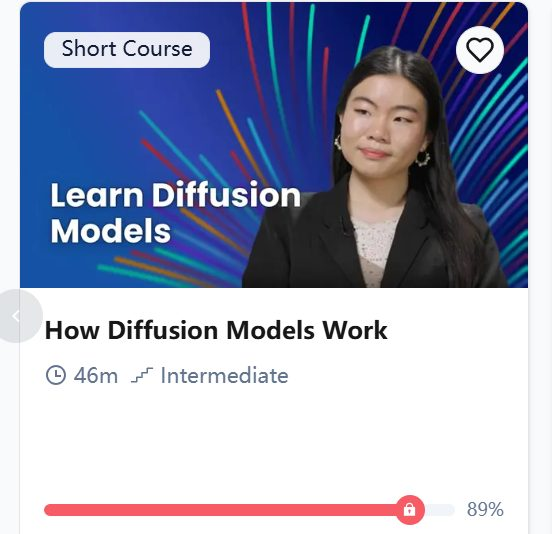

Learning Record 15
How Diffusion Models Work

网站：How Diffusion Models Work - DeepLearning.AI
DIFFUSION MODELS 学习笔记
（AI生成，我认为想要回顾课程内容直接看这个学习笔记挺好的，然后在最后还有我自己写的感悟）
一、课程概览
本课程介绍了 Diffusion Model 的基本工作原理，并通过四个 Lab 学习了 Sampling、Training、Context Control 和 DDIM。
整个 Diffusion Model 可以分成两个阶段
Training：训练一个 UNet，使其学会预测图片中的噪声。
Sampling：从随机噪声开始，利用训练好的 UNet 逐渐去除噪声，从而生成图片。
在此基础上，还可以加入 Context 来控制生成内容，并使用 DDIM 加速生成过程。
二、UNet
Diffusion Model 中使用的核心神经网络是 UNet。
UNet 的特点是输入和输出具有相同的空间尺寸。例如本课程中的图片大小为 3 × 16 × 16，因此 UNet 最终输出的预测噪声也是 3 × 16 × 16。
UNet 的结构主要包括
Input → Downsampling → Bottleneck → Upsampling → Output
Downsampling 部分逐渐降低空间分辨率，同时提取更加抽象的特征。
Upsampling 部分逐渐恢复空间分辨率，并结合 Downsampling 阶段的特征，通过 skip connection 保留图片中的细节信息。
在 Diffusion Model 中，UNet 的输出不是一张新的图片，而是：
“当前带噪图片中所包含的噪声的预测值。”
三、Diffusion Training
Training 的目标是让 UNet 学会预测噪声。
假设训练数据中有一张真实图片 x。
首先随机生成高斯噪声
noise = torch.randn_like(x)
然后随机选择一个 timestep
t = torch.randint(1, timesteps + 1, ...)
t 决定向图片中加入多少噪声。
根据 noise schedule，可以得到带噪图片
x_t = √(ᾱ_t) x + √(1 − ᾱ_t) ε
其中
x：原始图片
ε：随机生成的高斯噪声
t：当前 timestep
ᾱ_t：决定原图保留多少
1 − ᾱ_t：决定噪声占多少
x_t：最终得到的带噪图片
四、UNet 的训练目标
得到 x_t 后，将 x_t 和 timestep t 输入 UNet：
pred_noise = UNet(x_t, t)
UNet 输出 predicted noise。
因为我们知道最开始真正加入的 noise，所以可以比较
predicted noise 和 true noise
课程中使用 Mean Squared Error（MSE）作为 loss：
loss = MSE(pred_noise, noise)
然后执行
loss.backward()
optim.step()
通过不断训练，UNet 学会在不同 timestep、不同噪声程度下预测图片中的噪声。
五、为什么训练时随机选择 timestep？
训练时不会按照 1、2、3、……、500 的顺序依次训练，而是随机选择 timestep。
例如
Image 1 → t = 23
Image 2 → t = 417
Image 3 → t = 102
Image 4 → t = 356
这样可以让模型在训练过程中看到各种不同的噪声程度。
最终模型能够处理从“几乎没有噪声”到“几乎完全是噪声”的各种情况。
六、Sampling
训练完成以后，UNet 的参数不再更新。
生成图片时，从纯随机噪声开始
x_T ~ N(0, I)
然后不断执行去噪过程
x_T → x_{T-1} → x_{T-2} → ... → x_0
每一步都将当前图片输入 UNet，让 UNet 预测当前图片中的噪声，然后根据预测结果去除一部分噪声。
因此，Diffusion Model 的生成过程本质上是
“从随机噪声开始，逐渐去除噪声，最终得到一张图片。”
七、DDPM Sampling
本课程首先使用 DDPM 进行 Sampling。
例如
timesteps = 500
那么采样过程大致为
500 → 499 → 498 → ... → 1
因此需要进行大约 500 次 UNet forward。
代码核心结构为
for i in range(timesteps, 0, -1): eps = nn_model(samples, t) samples = denoise_add_noise(samples, i, eps, z)
每一次循环都需要运行一次 UNet，因此 DDPM Sampling 比较慢。
八、Sampling 中为什么还要加入随机噪声？
DDPM 的采样过程中，在大多数 timestep 上还会加入一定的随机噪声：
z = torch.randn_like(samples)
这样可以使生成过程保持随机性和多样性。
因此，即使使用同一个训练好的模型，多次运行 DDPM，也可以得到不同的生成结果。
九、Context Control
普通 Diffusion Model
UNet(x_t, t)
加入 Context 后
UNet(x_t, t, c)
其中 c 是 Context Vector。
本课程中的 Context 包括
hero
non-hero
food
spell
side-facing
例如
[1, 0, 0, 0, 0]
表示 hero。
[0, 0, 1, 0, 0]
表示 food。
十、Time Embedding 和 Context Embedding
Time embedding 用来告诉模型
“当前图片处于哪个 timestep，也就是当前噪声程度是多少。”
Context embedding 用来告诉模型
“希望生成什么类型的内容。”
在 UNet 中，Time embedding 和 Context embedding 会被加入到 Up-sampling blocks 中。
因此可以简单理解为
Time → 告诉模型“现在噪声有多少”
Context → 告诉模型“希望生成什么”
UNet → 根据这些信息预测当前图片中的噪声
十一、Context Mask
Training 时，并不是每次都提供 Context。
代码中会随机将 Context mask 掉。
这样做的目的，是让模型同时学习
有 Context 时，根据 Context 控制生成内容。
没有 Context 时，仍然能够学习一般的 sprite 分布。
这种思想与后续 Diffusion Model 中的 classifier-free guidance 有一定联系。
十二、连续 Context
虽然 Training 中使用的是 one-hot Context，例如：
[1, 0, 0, 0, 0]
但 Sampling 时也可以尝试使用连续值，例如
[1, 0, 0.6, 0, 0]
这相当于同时加入 hero 和 food 的特征。
因此 Context 不一定只能表示单一类别，也可以尝试组合不同属性。
十三、DDIM
DDPM 的主要问题是 Sampling 很慢。
如果训练时使用 500 个 timestep，DDPM 通常需要：
500 → 499 → 498 → ... → 1
大约 500 次 UNet forward。
DDIM（Denoising Diffusion Implicit Models）的核心思想是：
“Sampling 时不必经过每一个 timestep，可以跳过大量中间 timestep。”
例如
DDPM
500 → 499 → 498 → ... → 1
DDIM
500 → 475 → 450 → 425 → ... → 1
因此 DDIM 可以用远少于 500 次的 UNet forward 完成生成。
十四、DDPM 和 DDIM 的区别
DDPM
优点
采样质量通常较好。
生成过程具有随机性。
可以产生多样的结果。
缺点
Sampling 速度较慢。
需要运行大量 timestep。
DDIM
优点
Sampling 非常快。
可以跳过大量 timestep。
不需要重新训练模型。
可以使用较少的 sampling steps。
缺点
当 sampling steps 非常少时，生成质量可能有所下降。
十五、Training 和 Sampling 的区别
Training
真实图片 x ↓ 随机采样 timestep t ↓ 随机生成 noise ε ↓ 生成带噪图片 x_t ↓ UNet(x_t, t) ↓ 预测 noise ↓ 与真实 noise 比较 ↓ MSE Loss ↓ Backpropagation ↓ 更新 UNet
Sampling
随机噪声 x_T ↓ UNet 预测噪声 ↓ 去除一部分噪声 ↓ 得到下一步 x ↓ 重复去噪 ↓ 最终生成图片
十六、整个课程的核心逻辑
Diffusion Model 首先通过 Training 学习一个 UNet。
UNet 的目标不是直接生成图片，而是学习
“给定一张处于某个噪声程度的图片，我应该预测出其中的噪声是什么。”
训练完成以后，从随机噪声开始，通过 Sampling 逐渐去除噪声，最终得到图片。
Context 可以告诉模型希望生成什么，从而控制生成结果。
DDPM 使用较多的 timestep 逐步去噪，因此比较慢。
DDIM 可以跳过大量 timestep，在不重新训练模型的情况下显著加快 Sampling。
因此整个课程可以概括为
真实图片 + 随机噪声 → 训练 UNet 学习预测噪声 → 得到 Trained UNet → 从随机噪声开始 → 使用 DDPM 或 DDIM 进行去噪 → 加入 Context 控制生成内容 → 最终得到生成图片。
个人总结
最近在deeplearning.ai平台上不是很学得进去，因为习惯了codecademy这种知识比较密集/图文/交互学习方式，加上deeplearning.ai选的一些课感觉节奏太慢，所以大多放弃了。
这节课也差点放弃，因为代码基本看不懂
好在调整了一下学习方式：自己先基本过一遍视频，然后让chatgpt根据字幕和代码来讲解，一下就好上了
总体来说，一个多小时到两个小时，了解了这个概念，感觉收获还是挺满的，虽然工程能力提升不多，但是其实我的预期也不是通过看这个视频提升工程能力，而是了解知识